전기기능장 (2017-07-08 기출문제)
1과목: 임의구분
1. 히스테리시스 곡선에서 종축은 무엇을 나타내는가?
- 자계의 세기
- 자속밀도
- 기자력
- 자속
(정답률: 75%)

2. 그림과 같은 논리회로에서의 출력식은?
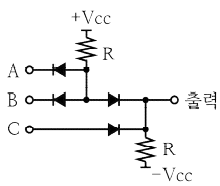
- ABC
- A+B+C
- AB+C
- (A+B)C
(정답률: 76%)
3. 전력변환 장치의 반도체 소자 SCR이 턴온(Turn On)되어 20A의 전류가 흐를 때 게이트 전류를 1/2로 줄이면 SCR의 애노드와 캐소드에 흐르는 전류는?
- 40A
- 20A
- 10A
- 5A
(정답률: 79%)
4. 정격전류가 55A인 전동기 1대와 정격전류 10A인 전동기 5대에 전력을 공급하는 간선의 허용전류의 최소값은 몇 A인가?(오류 신고가 접수된 문제입니다. 반드시 정답과 해설을 확인하시기 바랍니다.)
- 94.5
- 1⑤.5
- 115.5
- 131.3
(정답률: 72%)
5. 변압기의 내부저항과 누설 리액턴스의 % 강하율은 2%, 3%이다. 부하의 역률이 80%일 때 이 변압기의 전압변동률은 몇 %인가?
- 1.6
- 1.8
- 3.4
- 4.0
(정답률: 57%)
6. 동기전동기의 위상특성곡선에서 횡축은 무엇을 나타내는가?
- 역률
- 효율
- 계자전류
- 전기자전류
(정답률: 75%)
7. 저압 연접인입선은 인입선에서 분기하는 점으로부터 100m를 넘지 않는 지역에 시설하고 폭 몇 m를 초과하는 도로를 횡단하지 않아야 하는가?
- 4
- 5
- 6
- 7
(정답률: 88%)
8. 정전압 송전방식에서 전력 원선도 작성 시 필요한 것으로 모두 옳은 것은?
- 조상기용량, 수전단 전압
- 송전단 전압, 수전단 전류
- 송·수전단 전압, 선로의 일반회로정수
- 송·수전단 전류, 선로의 일반회로정수
(정답률: 77%)
9. 저압 옥내배선 공사에서 금속관 공사로 시공 할 경우 특징이 아닌 것은?
- 전선은 연선일 것
- 전선은 절연전선 일 것
- 전선은 금속관 안에서 접속점이 없을 것
- 콘크리트에 매설하는 것은 관의 두께가 1.2mm 이하 일 것
(정답률: 76%)
10. 3상 유도전동기의 회전력은 단자전압과 어떤 관계가 있는가?
- 단자전압에 무관하다.
- 단자전압에 비례한다.
- 단자전압의 2제곱에 비례한다.
- 단자전압의 1/2제곱에 비례한다.
(정답률: 73%)
11. 동기발전기의 권선을 분포권으로 할 때 나타나는 현상으로 옳은 것은?
- 집중권에 비하여 합성 유기기전력이 커진다.
- 전기자 반작용이 증가한다.
- 권선의 리액턴스가 좋아진다.
- 기전력의 파형이 좋아진다.
(정답률: 75%)
12. 3상 회로에서 2개의 전력계를 사용하여 평형부하의 역률을 측정하고자 한다. 전력계의 지시가 각각 2kW 및 8kW라 할 때 이 회로의 역률은 약 몇 % 인가?
- 49
- 59
- 69
- 79
(정답률: 63%)
13. 그림에서 1차 코일의 자기인덕턴스 L1, 2차 코일의 자기인덕턴스 L2, 상호인덕턴스를 M이라 할 때 LA의 값으로 옳은 것은?
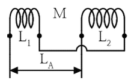
- L1+L2+2M
- L1-L2+2M
- L1+L2-2M
- L1-L2-2M
(정답률: 80%)
14. 3상 송전선로 1회선의 전압이 22kV, 주파수가 60㎐로 송전시 무부하 충전전류는 약 몇 A인가? (단, 송전선의 길이는 20km이고, 1선 1km당 정전용량은 0.5㎌이다.)
- 48
- 36
- 24
- 12
(정답률: 47%)
15. 저압 가공 인입선의 금속관 공사에서 앤트런스캡의 주된 사용 장소는?
- 전선관의 끝 부분
- 부스 덕트의 마감재
- 케이블 헤드의 끝부분
- 케이블 트레이의 마감재
(정답률: 81%)
16. 3상 송전선로에서 지름 5mm의 경동선을 간격 1m로 정삼각형 배치를 한 가공전선의 1선1km당의 작용 인덕턴스는 약 몇 mH/km 인가?
- 1.0
- 1.25
- 1.5
- 2.0
(정답률: 61%)
17. 출퇴근 표시등 회로에 전기를 공급하기 위한 1차측 전로의 대지 전압과 2차측 전로의 사용전압이 몇 V 이하인 절연 변압기를 사용하여야 하는가?
- 200 V, 40 V
- 220 V, 60 V
- 300 V, 40 V
- 300 V, 60 V
(정답률: 75%)
18. 가공전선로에 사용하는 애자가 갖춰야 하는 구비 조건이 아닌 것은?
- 가해지는 외력에 기계적으로 견딜 수 있을 것
- 전기적, 기계적 성능이 저하되지 않을 것
- 표면 저항을 가지고 누설전류가 클 것
- 코로나 방전을 일으키지 않을 것
(정답률: 88%)
19. 500kV 단상변압기 4대를 사용하여 과부하가 되지 않게 사용할 수 있는 3상 최대전력은 몇 kVA 인가?
- 500√3
- 1500
- 1000√3
- 2000
(정답률: 80%)
20. 그림과 같은 전기회로에서 전류 I1은 몇 A 인가?
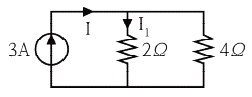
- 1
- 2
- 3
- 6
(정답률: 75%)
2과목: 임의구분
21. 그림과 같은 블록선도에서 C/R을 구하면?
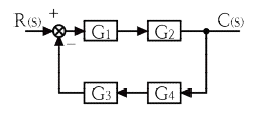
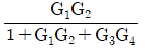
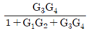
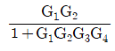
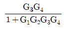
(정답률: 75%)
22. 단상 회로에 교류 전압 220 V를 가한 결과 위상이 45° 뒤진 전류가 15 A 흘렀다. 이 회로의 소비전력은 약 몇 W 인가?
- 1335
- 2333
- 3335
- 4333
(정답률: 71%)
23. 스위칭 주기(T)에 대한 스위치의 온(On) 기간 (ton)의 비인 듀티비를 D라 하면 정상상태에서 벅-부스트 컨버터(Buck-Boost Converter)의 입력전압 (VS)대 출력 전압 (V0)의 비 V0/VS를 나타낸 것으로 올바른 것은?
- D-1
- 1-D
- D/(1-D)
- D/(1+D)
(정답률: 77%)
24. 3상 권선형 유도전동기에서 2차측 저항을 2배로 할 경우 최대 토크의 변화는?
- 2배로 된다.
- 1/2로 줄어든다.
- √2배가 된다.
- 변하지 않는다.
(정답률: 72%)
25. 그림과 같은 논리회로를 1개의 게이트로 표현하면?
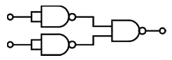
- NOT
- OR
- AND
- NOR
(정답률: 64%)
26. 서지보호장치(SPD)를 기능에 따라 분류할때 포함되지 않는 것은?
- 복합형 SPD
- 전압 제한형 SPD
- 전압 스위칭형 SPD
- 전류 스위칭형 SPD
(정답률: 69%)
27. 그림과 같이 단상 반파 정류 회로에서 저항 R에 흐르는 전류는 약 몇 A 인가? (단, v=200√2 sin wt[V], R=10√2[Ω]이다.)
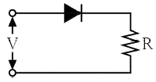
- 3.18
- 6.37
- 9.26
- 12.74
(정답률: 55%)
28. 직렬회로에서 저항 6 Ω, 유도리액턴스 8 Ω의 부하에 비정현파 전압 v=200√2 sin wt+100√2 sin3wt[V]를 가했을때, 이 회로에서 소비되는 전력은 약 몇 W 인가?
- 2456
- 2498
- 2534
- 2563
(정답률: 49%)
29. 동기발전기를 병렬운전 하고자 하는 경우의 조건에 해당되지 않는 것은?
- 기전력의 위상이 같을 것
- 기전력의 파형이 같을 것
- 발전기의 주파수가 같을 것
- 기전력의 임피던스가 같을 것
(정답률: 82%)
30. 반도체 소자 다이오드를 병렬로 접속하는 주된 목적은?
- 고전압화
- 고주파화
- 대용량화
- 저손실화
(정답률: 78%)
31. 전력변환 방식 중 직류전압을 높은 전압에서 낮은 전압으로 변환하는 장치는?
- 인버터
- 반파정류
- 벅 컨버터
- 부스트 컨버터
(정답률: 80%)
32. 220/380 V 겸용 3상 유도 전동기의 리드선은 몇 가닥을 인출하는가?
- 3
- 4
- 6
- 8
(정답률: 82%)
33. 송전선로에서 코로나 임계전압(kV)의 식은? (단, d 및 r은 전선의 지름 및 반지름, D는 전선의 평균 선간거리, 단위는 ㎝이며 다른 조건은 무시한다.)
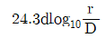
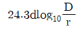
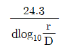
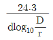
(정답률: 71%)
34. 다음 논리회로의 논리식 Z의 출력을 간략화 하면?
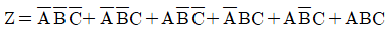
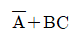
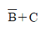
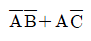
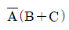
(정답률: 56%)
35. 직류 분권 전동기에서 전압의 극성을 반대로 공급하였을 때 다음 중 옳은 것은?
- 회전 방향은 변하지 않는다.
- 회전 방향이 반대로 된다.
- 회전하지 않는다.
- 발전기로 된다.
(정답률: 80%)
36. 전기공급설비 및 전기사용 설비에서 전선의 접속법에 대한 설명으로 틀린 것은?
- 접속부분은 접속관, 기타의 기구를 사용한다.
- 전선의 세기를 20% 이상 감소시키지 않는다.
- 전선의 전기저항이 증가되도록 접속하여야 한다.
- 접속부분은 절연전선의 절연물과 동등이상의 절연 효력이 있도록 충분히 피복한다.
(정답률: 86%)
37. 22.9kV 배전선로 가선공사에서 주상의 경완금(경완철)에 전선을 가선작업 할 때 필요 없는 금구류 또는 자재는 다음 중 어느 것인가?
- 앵커쇄클
- 현수애자
- 소켓아이
- 데드엔드크램프
(정답률: 71%)
38. 동기 전동기의 전기자 권선을 단절권으로 하는 이유는?
- 역률을 좋게 한다.
- 절연을 좋게 한다.
- 고조파를 제거한다.
- 기전력의 크기가 높아진다.
(정답률: 77%)
39. 동기전동기 12극, 60㎐ 회전자계의 속도는 몇 m/s 인가? (단, 회전자계의 극 간격은 1m 이다.)
- 60
- 90
- 120
- 180
(정답률: 66%)
40. 400V 미만인 저압용의 계기용 변성기에 있어서 그 철심 외함에 적당한 접지공사는?(관련 규정 개정전 문제로 여기서는 기존 정답인 3번을 누르면 정답 처리됩니다. 자세한 내용은 해설을 참고하세요.)
- 제1종 접지공사
- 제2종 접지공사
- 제3종 접지공사
- 특별 제3종 접지공사
(정답률: 79%)
3과목: 임의구분
41. 자기용량 10kVA의 단권변압기를 이용해서 배전전압 3000V를 3300V로 승압하고 있다. 부하역률이 80% 일 때 공급할 수 있는 부하 용량은 약 몇 kW 인가? (단, 단권변압기의 손실은 무시한다.)
- 58
- 68
- 78
- 88
(정답률: 56%)
42. 송전선로에 코로나가 발생하였을 때 장점은?
- 송전선로의 전력 손실을 감소시킨다.
- 전력선 반송 통신설비에 잡음을 감소시킨다.
- 송전선로에서의 이상전압 진행파를 감소시킨다.
- 중성점 직접접지 방식의 송전선로 부근의 통신선에 유도장해를 감소시킨다.
(정답률: 73%)
43. 변압기의 누설 리액턴스를 감소시키는데 가장 효과적인 방법은?
- 권선을 동심 배치시킨다.
- 코일을 분할하여 조립한다.
- 코일의 단면적을 크게 한다.
- 철심의 단면적을 크게 한다.
(정답률: 75%)
44. 그림과 같은 전기회로에서 단자 a-b에서 본 합성저항은 몇 Ω 인가? (단, 저항 R은 3Ω 이다.)
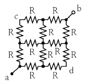
- 1.0
- 1.5
- 3.0
- 4.5
(정답률: 71%)
45. 콘덴서 인가 전압이 20V일 때 콘덴서에 800μC이 축적되었다면 이 때 축적되는 에너지는 몇 J 인가?
- 0.008
- 0.016
- 0.08
- 0.16
(정답률: 53%)
46. 동기발전기에서 발생하는 자기여자 현상을 방지하는 방법이 아닌 것은?
- 단락비를 감소시킨다.
- 발전기를 2대 이상을 병렬로 모선에 접속시킨다.
- 송전선로의 수전단에 변압기를 접속시킨다.
- 수전단에 부족 여자를 갖는 동기 조상기를 접속시킨다.
(정답률: 63%)
47. 아래 논리회로에서 출력 F로 나올 수 없는 것은?
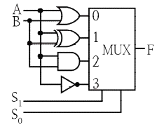
- AB
- A+B
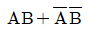
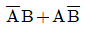
(정답률: 56%)
48. 전기회로에서 전류에 의해 만들어지는 자기장의 자력선의 방향을 나타내는 법칙은?
- 암페어의 오른나사 법칙
- 플레밍의 왼손 법칙
- 가우스의 법칙
- 렌츠의 법칙
(정답률: 77%)
49. RC 직렬회로에서 t=0일 때 직류전압 10V를 인가하면 t=0.1 sec 일 때 전류는 약 몇 mA인가? (단, R=1000 Ω, C=50 ㎌ 이고, 초기 정전용량은 0이다.)
- 2.25
- 1.85
- 1.55
- 1.35
(정답률: 36%)
50. 어떤 정현파 전압의 평균값이 220V이면 최댓값은 약 몇 V 인가?
- 282
- 315
- 345
- 445
(정답률: 71%)
51. 345kV의 가공송전선을 사람이 쉽게 들어갈 수 없는 산지에 시설하는 경우 가공 송전선의 지표상 높이는 최소 몇 m 인가?
- 5.28
- 6.28
- 7.28
- 8.28
(정답률: 68%)
52. 전기공사시 정부나 공공기관에서 발주하는 물량 산출시 전기재료의 할증률 중 옥외 케이블은 일반적으로 몇 % 이내로 하여야 하는가?
- 1
- 3
- 5
- 10
(정답률: 67%)
53. 전력변환 장치에서 턴온(Turn On) 및 턴오프(Turn Off) 제어가 모두 가능한 반도체 스위칭 소자가 아닌 것은?
- GTO
- SCR
- IGBT
- MOSFET
(정답률: 59%)
54. 3상 유도 전동기의 1차 접속을 Δ결선에서 Y결선으로 바꾸면 기동 시의 1차 전류는?
- 1/3로 감소한다.
- 1/√3로 감소한다.
- 3배로 증가한다.
- √3배로 증가한다.
(정답률: 71%)
55. 표준시간을 내경법으로 구하는 수식으로 맞는 것은?
- 표준시간=정미시간-여유시간
- 표준시간=정미시간×(1-여유율)
- 표준시간=정미시간×(1/(1-여유율))
- 표준시간=정미시간×(1/(1+여유율))
(정답률: 76%)
56. 검사특성곡선(OC Curve)에 관한 설명으로 틀린 것은? (단, N : 로트의 크기, n : 시료의 크기, c : 합격판정개수이다.)
- N, n이 일정할 때 c가 커지면 나쁜 로트의 합격률은 높아진다.
- N, c가 일정할 때 n이 커지면 좋은 로트의 합격률은 낮아진다.
- N/n/c의 비율이 일정하게 증가하거나 감소하는 퍼센트 샘플링 검사 시 좋은 로트의 합격률은 영향이 없다.
- 일반적으로 로트의 크기 N이 시료 n에 비해 10배 이상 크다면, 로트의 크기를 증가 시켜도 나쁜 로트의 합격률은 크게 변화하지 않는다.
(정답률: 62%)
57. 품질특성에서 X관리도로 관리하기에 가장 거리가 먼 것은?
- 볼펜의 길이
- 알코올 농도
- 1일 전력소비량
- 나사길이의 부적합품 수
(정답률: 76%)
58. 다음 데이터로부터 통계량을 계산한 것 중 틀린 것은?
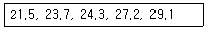
- 범위(R) = 7.6
- 제곱합(S) = 7.59
- 중앙값(Me) = 24.3
- 시료분산(s2) = 8.988
(정답률: 67%)
59. 다음 그림의 AOA(Activity-on-Arc)네트워크에서 E 작업을 시작하려면 어떤 작업들이 완료되어야 하는가?
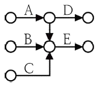
- B
- A, B
- B, C
- A, B, C
(정답률: 79%)
60. 브레인스토밍(Brainstorming)과 가장 관계가 깊은 것은?
- 특성요인도
- 파레토도
- 히스토그램
- 회귀분석
(정답률: 78%)